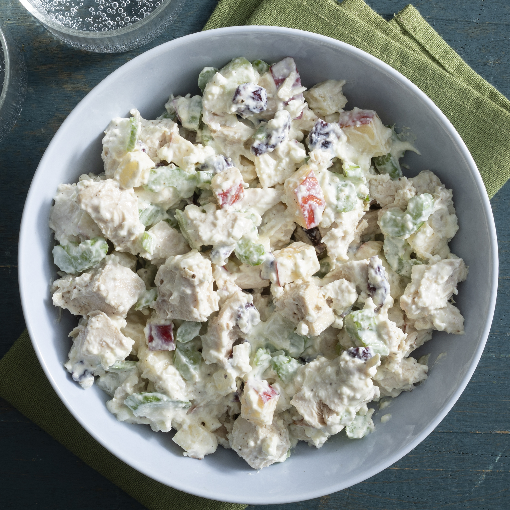

Healthy Chicken Salad

This healthy chicken salad recipe is made with a mixture of Greek yogurt and cottage cheese instead of regular mayonnaise, resulting in a healthier version that's still creamy and delicious but higher in protein. Apples and dried cranberries add a sweet-tart flavor, while chopped pecans provide textural interest in every bite. Serve it on crackers, on a croissant, in a pita, or grab a fork and just dig in!
Ingredients
- Greek yogurt
- Cottage cheese
- Vegetables
- Fruit
- Pecans
- Seasonings
- Chicken
Steps
- It couldn't be easier to make healthy chicken salad: Simply stir all the ingredients until they're well-combined. That's it! You'll find the full, step-by-step recipe below.